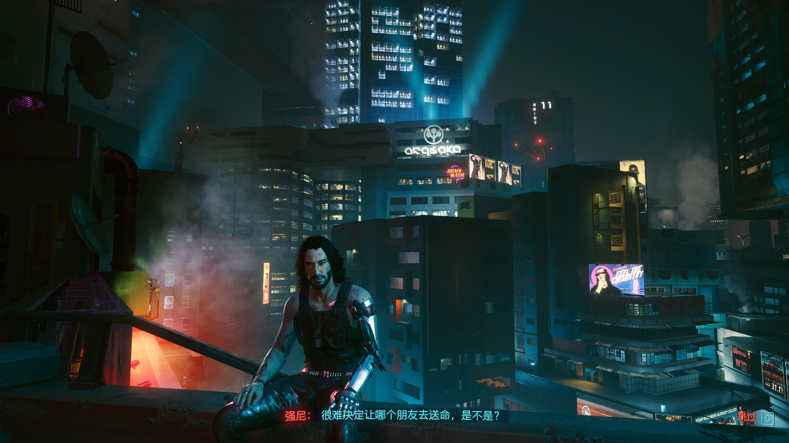

抛开早年间给玩家画大饼带来的现实落差，以及发售初期的技术缺陷，在夜之城晃悠了快 40 个小时的我看来，《2077》依然是款非常优秀的开放世界 RPG。但是玩下来感觉还是有不少让人觉得可惜的地方。
目前游玩体验下来，整个游戏的主线采用树状结构呈现，支线任务间关联不大，只有到关键转折点任务「 夜曲 OP.55 N.1」作出选择的时候，支线任务的完成度才起到决定性的作用：如果你完成了帕南的支线，那么就可以打出星星/节制结局；如果罗格，就是太阳/节制结局。剧本的叙事方式没有让我大呼 bravo，但故事本身依然是非常精彩的。
跟杰克搭档两年的日子，游戏用简单的文本过场直接省略了，V 和杰克间的友谊在我的体验里似乎还是不够深厚。但在德拉曼出租车内看到杰克离去，还是多少有些感触。不同于《巫师》系列，第一人称视角让游戏能够通过直接怼脸的方式，拉近你和 NPC 的距离，也正是因为近距离，细致的表情、动作以及富有感情的对白，让我深陷其中。
夜之城是个开放世界，但感觉又没完全开放，一定程度上打了折扣，比如当我想在摩天高楼公寓的高层跳到较矮的一层，就会堕楼停搏、非支线任务/委托的房间几乎不可进。不过这些都不是什么大问题，聊「开放世界」，更多可能想讨论在这个世界探索过程中的交互乐趣，毕竟在 960 万平方公里填充行为机械的 NPC 和重复的建筑物毫无游戏性可言。
开放世界的概念本身应该服务游戏性，为玩家提供游玩乐趣。说到这里，突然想起几年前通关的《荒野之息》，里面的道具、技能以及环境之间的组合，所带来的涌现式设计让我至今难忘，在自由的海拉鲁大陆里品尝到了足够多的趣味。然而夜之城里面没有这些内容，倒是 V 的黑客技能能延展出一点这个感觉，多数情况下时间离开支线任务/委托的任务空间后，外部的世界更多只是一个背景板，所以我多数时间就是去干地图上的 checklist 找乐子玩。
说到 checklist，最近每完成一个支线/委托都自动给我切到主线「 夜曲 OP.55 N.1」任务导航，这是非常糟心的体验，多少有点剥夺玩家自由探索、发现的乐趣。可能这也是《2077》还不够自由的体现吧。
有趣、多彩、别具特色的赛博朋克未来城，如果只是作为一个故事展现的舞台，就实在是太可惜了。
虽然我是直接游玩 1.31 版本，但这个版本里面技术性缺陷也不少。长期的体验性问题，比如有些物品无法对准拾取，路人动不动就抱头蹲下、跑路让人出戏，随不是很严重但多少让人有点糟心。目前遇到卡点的地方就一个，游戏中期我调高了难度后，某些任务卡点导致无法继续，不得已又调回普通。
游戏内确实有很多地方给人阉割的感觉，比如：德拉曼出租车的战斗模式，以为会有刺激的战斗演出，结果什么也没发生；不少快速移动点设计成公共交通的站台，感觉这个城市应该有一个完善的公共交通系统才对……我没有跟踪过游戏的宣发，如果是真爱粉，估计感受会更加强烈。

— Dec 14, 2021